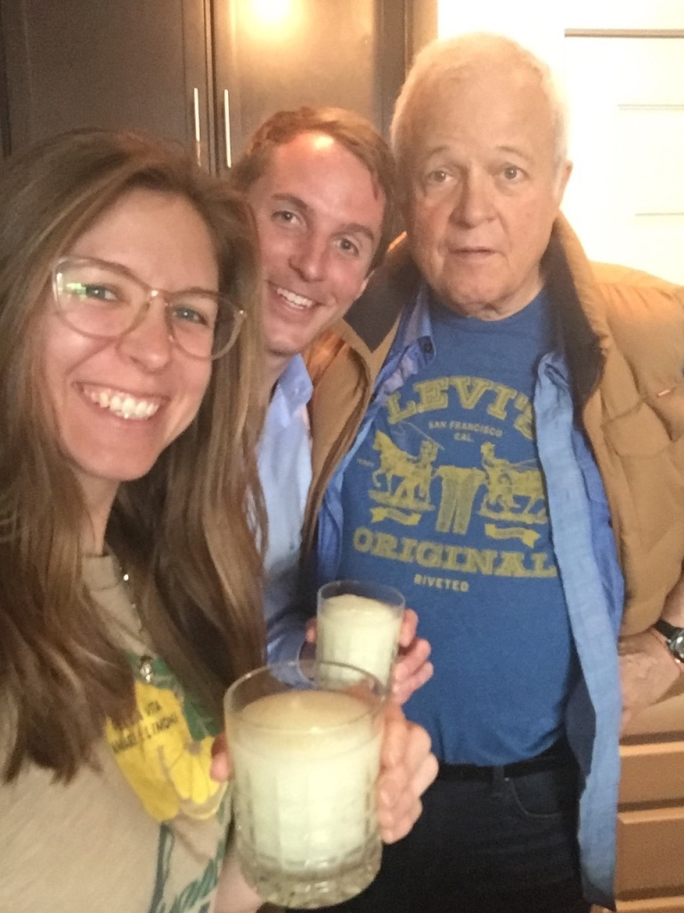

Welcome
About Me
Hi! My name is James, and welcome to my website. I am currently in the process of learning to become a Front End Web Developer at Turing's School of Software and Design in Denver, CO. I am 28 years old and have been living here in Colorado for almost 3 years.
Originally, I was born in Chicago, but have lived in many states: Indiana, Illinois, California, Arizona, Kentucky, and now Colorado. I plan to one day go back to every state I have ever called home and plant a tree.
Web Development
I have been interested in programming and web development for some time. While attending the University of Arizona
I was teaching myself to code with CodeCombat. My senior year I took a class that was part Computer Science and part
Psychology and Philosophy. For the most part my web development skills were put on the back burner as I entered the workforce,
gaining professional experience in logistics, financial services, hospitality, and electronics.
Every now and then I would think of a business idea and wish I had the technical prowess to design an app and build that idea.
At long last I am taking the leap, and going full steam ahead into this next chapter of my life in becoming a Front End Developer
and beyond.
Hobbies
I am quite the connoisseur of comedy. While I was growing up in Chicago, I attended a summer camp at Second City, and I was hooked. I learned improv, sketch writing, and got to improvise scenes in front of audiences with my troupe. Sketch comedy, standup comedy, and comedic movies I love it all.
Additionally, I have been a fan of cartoons and animation. I have been thinking of leveraging some of the skills I plan to learn into making a game about a penguin that breaks free of the Brooklyn Zoo and has to try and survive in the jungle that is New York City. It will be called Sanguine Penguin, and be loosely based off the story of the Count of Monte Cristo, a tale of revenge and adventure, and also my favorite book.
Favorite Comedies
Young Frankenstein
Mel Brook's Young Frankenstein starring Gene Wilder, is a parody black and white comedy/horror film of the classic tale Frankenstein. Gene Wilder plays Dr. Frederick Frankenstein, grandson of the infamous mad scientist Victor Frankenstein. After being informed of a certain relative's sudden passing, he is bequeathed a castle and an itch to follow in the Frankenstein footsteps.
Bubba Ho Tep
Another comedy horror, this film takes place in a retirement home, where our protagonist, Elvis Presley, or at least someone who believes he is Elvis, is living out the last of his days. Trouble rises when an excavated Egyptian pharoah is awoken from his slumber, and begins feeding on the souls of the retirement community. Elvis and his comrade, John F. Kennedy, team up to kick some mummy ass.
Monty Python and the Holy Grail
The comedy troupe's tour de force, Monty Python and the Holy Grail is one of the greatest comedies of all time. The film parodies the classic King Arthur tale. Accompanied by the Knights of the Round table, they embark on a quest to find the Holy Grail, encountering an apocalyptic murdering rabbit, 3 headed giants, a Trojan Rabbit, and the ultimate question:
What is your favorite color?